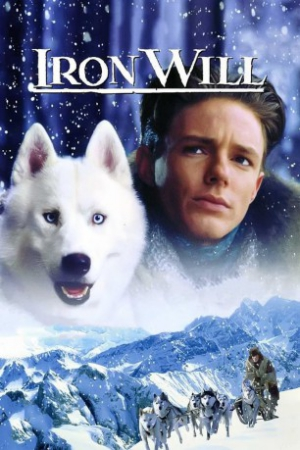

Country:United States, 108 minutes
Spoken languages:English
Genres:Adventure, Family, Action
Director(s):Charles Haid
Writer(s):John Michael Hayes, Jeff Arch, Djordje Milicevic
Video Codec:Unknown
Number: 2442


Certification:PG
Storyline:
When Will Stoneman's father dies, he is left alone to take care of his mother and their land. Needing money to maintain it, he decides to join a cross country dogsled race. This race will require days of racing for long hours, through harsh weather and terrain. This young man will need a lot of courage and a strong will to complete this race.
Cast:


Medium: Original DVD,
Loaned: No
Aspect ratio: Unknown